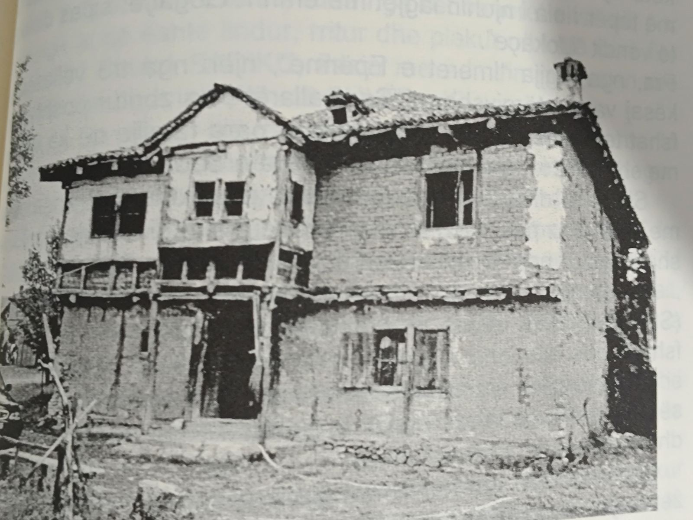
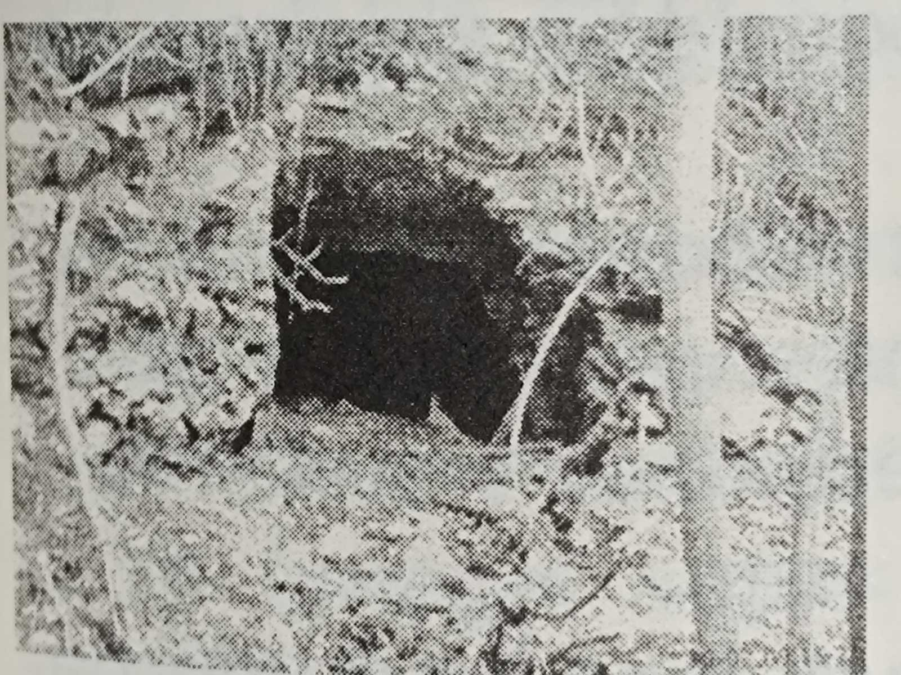

Zhvillimi i sportit të boksit në Garanë
Sa i përket historisë, në këtë fshat i takon dhe zhvillimi i boksit i cili u zhvillua më:
20 Korrik 2024 u zhvillua sporti i boksit në fshatin Garanë.
Pjesëmarrësit ishin:
Mersim Zeqiri (Garanë, Maqedoni),
Dielli Vranovci (Kosovë),
Ndriqim Emini (Austri),
Aleksandër Kallshi (Shqipëri, Gjermani),
John Gjini (Shqipëri, Amerikë),
Elbasan Hajzeraj (Kosovë),
Viktor Cakiqi (Shqipëri, Gjermani),
dhe Georgio Dominues.
Historie fshatit
Fshati Garanë e quajtur si më përpara Kodrishta e njohur sot Strellcë kufizohet me këto katunde: fshati Cërvicë, rruga kryesore të çon për në Osllome. Marrim drejtimin e fshatit Shutovë dhe Kodrishtë, kufiri vazhdon në drejtim të ledines "Kashinec" dhe kufiri vazhdon lart "Heteve".Fshati Garanë pëprara ka malin në krahun e djathtë dhe është zona kufitare.
Ky fshat përmban rreth 450 shtepi me mbi 2000 banorë.
është fshat i shpërnadarë dhe i ndërtuar lagje-lagje, kodrat njëra-tjetres u rrijnë përballë të mbushura me pemë të ndryshme dhe blerime natyrale ku peisazhet e fshatit të lëne pershtypjen e vetë.
Sa i përket pamjes së fshatit është me nje dukuri të bukur natyrore.
Kjo shtëpi është e para në këtë vend-300 vjeçare
Fshati Kodrishtë (Strellcë), nuk është më largë se 4 kilo-metra nga qyteti i Kërçovës.
Parashtroi tezën se në këtë fshat ka shumë për tu shkruar, ka të fshehura nën shumë vete, është fshati i misterioz.
Kjo tezë e dalur para masës së gjerë (opinionit) do të ngjall shumë polemika ndër historian, arkeologë, topografë të tjerë.
Është një vend i denjë...!
Në këtë kapitull “Një rrëfenjë e spikatur” do të shkruajmë një temë me karakter lokal, por në këtë kapitull lidhur me gjenealogjinë e familjes, karakterin edhe zbulimin e kombëtares, rast që bën të gëzojë opinionin tonë e më gjerë.

Luftat
Me gjithë ato vuajtje nga turku per 500 vjet vite me rradhë shqipetaret në ketë fshat nuk u asimiluan po thuajse fare.
Pas largimit të Turqëve erdhën bandat gjakatare sllave ku filluan dhe ndryshimin e emrave në keto vende Shqipëtare ku kaloi emri nga Kodrishte në (Strellcë).
Ky burim informativ për këtë fshat, është shtojcë e vegi-meve të tij. Nga ky fshat më parë ka pasur trima edhe luftëtarë kundër turqve dhe sllavëve të njëpasnjëshme në vazhdim me sllavo-komunistët.
Shqiptarët janë mësuar me luftëra që herët...! Në vitin 1913, nga gjakëpirësi sllav, Mikalja i Brodit nga Kërçova, vriten:
Sali Veseli dhe Aziz Dervishi.
Ku edhe luftën e UÇK's nga ky fshat dolën trima të cilët luftuan për liri ishin: Refat Jusufi, Jusuf Bajrami, Adil Neziri, Lulëzim Veseli.
Pasuritë nëntokësore
Përveç bukurive natyrore-peisazheve të tij, kurse fshati ka dhe pasuri të tjera nëntokësore-xehe.
Aty nga fillon mali "Maja e Shqipes", pra nga Kodrishta rreze këtij mali pikerishte nën mullirin "Mullirin e Izerit të Rames", janë dy zgaflle (tunele), për thellesin e tyre që nuk dihet.
Tunelet
Tunelet përmes i ndan uji i "Perroit të Venicës", që vjen nga mali i këtij fshati.
Tunelli që gjendet djathtas mbështetur malit „Maja e Shqipes", flitet se është i pasur me thëngjill guri, kurse tjetri përballë tij është i pasur me mineral-ar, që është në dy drej-time dhe ndahen nga brenda në formën e shkronjës "V"

Tuneli nga brenda në formën e shkonjës "V", njëri drejtim të tuneli vazhdon djathtas nën varrezat e xhamisë. çon kah "Xhamia e Sadikallarëve"-majtas, kurse drejtimi tjetër,
Për tunelin që flitet se është i pasur me mineral-ar, vet fakti tregon se gurishtja para zgafelles është me ngjyrë të verdhë.!?
Për këto informata, për njoftime më të hollësishme i mbetet gjeodezisë.
(Kjo është zgafella e cila ndahet nga brenda në formën e shkr. V)
Siç e cekëm më herët qyteti i Kërçovës me fshatin Kodrishtë kanë një largësi ndërmjet prej 4 kilometrash, me një lartësi mbi detare 600-700 metra.
Këto të dhëna të historisë për fshatin u morrën nga shkrimtari: "Shefik Sadiku" me informacionet e marra nga libri: "Shqipëtarët zanafillën e kanë këtu"